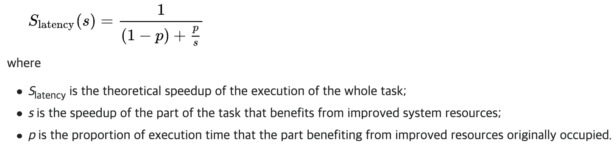
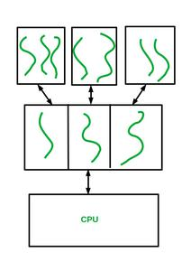

쓰레드
지금까지는 single thread of control인 프로세스들을 살펴봤지만 multiple threads of control을 가질 수도 있다. Program Counter만 잘 바꾸면 같은 프로그램 내에서도 여러 context의 코드를 실행할 수 있다.
쓰레드란?
A thread is a lightweight process(LWP). A basic unit of CPU utilization.
쓰레드의 구성요소
- thread ID
- program counter
- register set
- stack

Multithreading의 장점
client-server 시스템을 예로 들자면, 줄을 세우는 기존 방법과 달리 client마다 쓰레드를 생성해 여러 request들을 함께 처리할 수 있다.
멀티쓰레드 프로그래밍의 장점
- Responsiveness: may allow continued execution
- Resource Sharing: threads share resources of process(code와 data 영역을 공유함)
- Economy: cheaper than process creation
- Scalability(확장성): process can take advantage of multiprocessor architectures
자바에서 쓰레드는 프로그램 실행의 기본적인 모델이다. 쓰레드 생성과 관리를 위한 많은 기능들이 있음.
자바에서의 쓰레드 사용
자바에는 명시적인 쓰레드 생성을 위한 세가지 테크닉이 있다.
Inheritance from the Thread class
- 다른 클래스 상속이 안되는 문제가 있어 다른 방법을 권유.
- Thread 클래스에서 derive된 클래스를 만들고 run 메소드를 오버라이드한다.
package dict.cs.os.thread;
public class MyThread1 extends Thread {
public void run() {
try {
while (true) {
System.out.println("Hello, Thread!");
Thread.sleep(500);
}
} catch (InterruptedException ie) {
System.out.println("I'm interrupted");
}
}
}
package dict.cs.os.thread;
public class MyThread1TestCode {
public static final void main(String[] args) {
MyThread1 thread = new MyThread1();
thread.start();
System.out.println("Hello, My Child!");
}
}
Implementing the Runnable interface
- 제일 많이 쓴다.
- Runnable 인터페이스를 충족시키는 새로운 클래스를 정의하고 마찬가지로 run 메소드를 오버라이드한다.
package dict.cs.os.thread;
public class MyThread2 implements Runnable {
public void run() {
try {
while (true) {
System.out.println("Hello, Runnable!");
Thread.sleep(500);
}
} catch (InterruptedException ie) {
System.out.println("I'm interrupted");
}
}
}
package dict.cs.os.thread;
public class MyThread2TestCode {
public static final void main(String[] args) {
Thread thread = new Thread(new MyThread2());
thread.start();
System.out.println("Hello, My Runnable Child!");
}
}
Using the Lambda expressing(Java 1.8~)
- 새로운 클래스도 귀찮고, 람다 표현식으로 구현하자!
package dict.cs.os.thread;
public class MyThread3TestCode {
public static void main(String[] args) {
Runnable task = () -> {
try {
while (true) {
System.out.println("Hello, Lambda Runnable!");
Thread.sleep(500);
}
} catch (InterruptedException ie) {
System.out.println("I'm interrupted");
}
};
Thread thread = new Thread(task);
thread.start();
System.out.println("Hello, My Lambda Child!");
}
}
부모 쓰레드의 대기는 자바에서 wait가 아닌 join을 사용한다.
package dict.cs.os.thread;
public class JoinExample {
public static final void main(String[] args) {
Runnable task = () -> {
for (int i = 0; i < 5; i++) {
System.out.println("Hello, Lambda Runnable!");
}
};
Thread thread = new Thread(task);
thread.start();
try {
thread.join();
} catch (InterruptedException ie) {
System.out.println("Parent thread is interrupted");
}
System.out.println("Hello, My Joined Child!");
}
}
쓰레드의 종료는 interrupt를 사용한다.
package dict.cs.os.thread;
public class InterruptExample {
public static final void main(String[] args) throws InterruptedException {
Runnable task = () -> {
try {
while (true) {
System.out.println("Hello, Lambda Runnable!");
Thread.sleep(100);
}
} catch (InterruptedException ie) {
System.out.println("I'm interupted");
}
};
Thread thread = new Thread(task);
thread.start();
Thread.sleep(500); // 이거 주석처리하면 부모 다음 자식 실행됨!!
thread.interrupt();
System.out.println("Hello, My Interrupted Child!");
}
}
프로그램은 짤 줄은 몰라도 6, 7장 동기화 부분에서 자바로 설명하니까 코드는 얼추 알아두기~
멀티코어 시스템에서의 멀티쓰레딩
향상된 동시성을 위해 멀티쓰레딩으로 멀티코어를 더 효과적으로 사용할 수 있다. 싱글코어에서는 사이사이 interleaved되겠지만, 멀티코어에서는 몇몇 쓰레드들은 parallel하게 작동할 수 있다. 4개의 쓰레드로 구성된 어플리케이션을 생각해보면 싱글코어에서는 쓰레드가 시간에 따라 나뉘어 실행되겠지만 멀티코어에서는 parallel하게 실행될 수 있다.
Interleave를 사전에 찾아봤는데 다음과 같다.
인터리브: 기억 장치를 여러 부분으로 나누고, 그 동작 주기를 조금씩 늦추어서 등가적으로 고속화하는 일.
멀티코어 시스템에서의 프로그래밍 관문들
- Identifying tasks: 여러 문제로 나눌 수 있는 부분이 어디인가?
- Balance: 각 task가 같은 양의 일을 할 수 있도록 해야한다.
- Data splitting: 데이터 또한 각 코어에 나뉘어야한다.
- Data dependency: ensure that the execution of tasks is synchronized to accommodate the data dependency.
- Testing and debugging: 단일 쓰레드보다 어렵다.
병렬(parallelism)은 Data parallelism과 task parallelism으로 나뉜다. 출처
- Data Parallelism means concurrent execution of the same task on each multiple computing core.
- Task Parallelism means concurrent execution of the different task on multiple computing cores.
암달의 법칙
암달의 법칙(Amdahl's law)은 컴퓨터 시스템의 일부를 개선할 때 전체적으로 얼마만큼의 최대 성능 향상이 있는지 계산하는 데 사용된다.
문제는 풀 수 있는데 식으로 보면 헷갈린다 ^^,,, 지금 멀티코어 프로그래밍에 대해 살펴보고있으니 S를 시스템에서 serial하게 실행되야되는 부분의 비율, N을 코어의 개수라고 해보자.
싱글코어에서의 실행 시간을 1이라고 하면 이중 S만큼은 serial하게 실행되어야하고 (1-S)만큼은 병렬적으로 실행할 수 있다. 따라서 (1-S)는 멀티코어시스템에서 (1-S)/N 으로 줄어들고 멀티코어에서의 전체 시간은 S + (1-S) / N이 된다. 여기서 다음 식이 도출된다.

위키피디아 출처인데, 여기서는 변수들이 보다 일반적이다.

병렬처리가 가능한 부분이 적을수록 성능 향상폭이 확연히 감소한다.
멀티쓰레딩 모델

두 종류의 쓰레드
User threads may be executed by kernel threads in various ways (one-to-one, many-to-one, many-to-many).
Why must user threads be mapped to a kernel thread
Difference between Kernel, Kernel-Thread and User-Thread
- user thread
- supported above the kernel, and are manaaged without kernel support.
- User threads are the threads created by the user with help from a user library and are visible just to the creating process and it’s run time environment (the kernel has no idea about the creation of these threads). User threads just stay in the address space of the creating process and are run and managed by the creating process without kernel intervention i.e., any problems with the execution of these threads are not kernel’s headache.
- 커널이 서포트하는데 서포트 없이 관리된다고?? 뭔소린가 싶어서 찾아봤다. 참고, 참고
- 커널은 사용자 스레드의 존재를 인식하지 못한다.
- 사용자 스레드가 커널 스레드를 이용하려면 시스템 호출로 커널 기능을 이용해야 한다.
- 사용자 영역에서 생성 및 관리되므로 속도가 빠르지만 커널이 스레드가 하나라고 인식하기 때문에 하나의 스레드가 중단되면 다른 모든 것들도 중단된다.
- kernel thread
- Kernel threads on the other hand are created by the kernel and are visible to it. A user process with the help of a provided library asks kernel to create an executable thread for that process and the kernel in turn creates the thread on behalf of the process, and puts it onto it’s list of the available executable threads present. Here the creation, execution and management of the thread is taken care of by the kernel.
- 커널이 직접 생성하고 관리하는 스레드
메모: IPC에서는 동기화 문제가 없나?
유저 쓰레드와 커널 쓰레드의 관계
Kernel thread is the entity that CPU scheduler considers for assignment hence user threads must be mapped to corresponding kernel threads (if you want CPU to execute them).
- Many-to-One Model(user-level threading). 왼쪽이 유저, 오른쪽이 커널. 가장 기본적. 유저 쓰레드가 많아지면 감당 못함.
- One_to_One Model(kernel-level threading). Linux the GNU C Library implements this approach (via the NPTL or older LinuxThreads). This approach is also used by Solaris, NetBSD, FreeBSD, macOS, and iOS.
- Many-to-Many Model
쓰레드 라이브러리는 쓰레드를 만들고 관리하는 API이다. POSIX Pthreads, Windows thread, Java thread(얘네는 운영체제꺼 끌어다? 씀)등등이 있다.
Is Pthread library actually a user thread solution?
#include <stdio.h>
#include <stdlib.h>
#include <pthread.h>
// 컴파일때? -pthread 옵션 안줘도 작동하긴 함
// data shared by the threads
int sum;
// thread call this function
void *runner(void *param);
int main(int argc, char *argv[])
{
pthread_t tid; // thread identifier
pthread_attr_t attr; // thread attributes;
pthread_attr_init(&attr);
pthread_create(&tid, &attr, runner, argv[1]);
pthread_join(tid, NULL);
printf("sum = %d\n", sum);
}
void *runner(void *param)
{
int upper = atoi(param);
sum = 0;
for (int i = 1; i <= upper; i++)
sum += i;
pthread_exit(0);
}
#include <stdio.h>
#include <stdlib.h>
#include <pthread.h>
#include <unistd.h>
void *runner(void *param);
int main(int argc, char *argv[])
{
pid_t pid;
pthread_t tid;
pthread_attr_t attr;
pid = fork();
if (pid == 0)
{
fork();
pthread_attr_init(&attr);
pthread_create(&tid, &attr, runner, NULL);
pthread_join(tid, NULL);
}
fork();
if (pid > 0)
wait(NULL);
printf("Process Ended\n");
return 0;
}
void *runner(void *param)
{
printf("I am thread\n");
pthread_exit(0);
}
프로세스와 쓰레드 몇 개씩 생성될까~?
The Strategy of Implicit Threading
알아서 쓰레딩 해줘~
The design of concurrent and parallel applications
- i.e. the design of multithreading in multicore systems,
- is too difficult for application developers.
So, transfer the difficulty to compiler and run-time libraries.
네가지 접근법
- Thread Pools: 쓰레드 유저가 안만들고 Thread Pool에서 잘 가져다 쓰게. getThread
- Fork & Join: 책~!
- OpenMP: 컴파일러 지시문, API로 C/C++에서
- Grand Central Dispatch(GCD): 애플에서 사용
OpenMP: parallel region만 지정해주면 코드블럭을 알아서 parallel하게 실행해줌. 지금까지와는 달리 라이브러리가 아닌 컴파일러에게 지시.
#include <stdio.h>
#include <omp.h>
#define SIZE 100000000
int a[SIZE], b[SIZE], c[SIZE]
int main()
{
for (i = 0; i < SIZE; i++)
{
a[i] = b[i] = i;
}
#pragma omp parallel for
for (i = 0; i < SIZE; i++)
{
c[i] = a[i] + b[i];
}
return 0;
}
이건 테스트는 못해봄. macOS에 기본적으로 안깔려져있음
여러번 실행됨! 병렬이라서. omp_set_num_threads(4);, omp_get_thread_num? 도 사용할 수 있음. time 써서 시간 측정해보면 병렬처리를 위한 대기 등때문에 user가 긺.
1 2 (2, 3) 2 3 4 2 3
#include <stdio.h>
#include <stdlib.h>
#include <pthread.h>
#include <unistd.h>
void runner()
{
printf("Hello I'm thread\n");
pthread_exit(0);
}
int main()
{
pthread_t tid; // thread identifier
pthread_attr_t attr; // thread attributes;
pthread_t tid2; // thread identifier
pthread_attr_init(&attr);
pthread_create(&tid, &attr, runner, NULL);
pthread_create(&tid2, &attr, runner, NULL);
fork();
pthread_join(tid, NULL);
pthread_join(tid2, NULL);
}
쓰레드도 같이 복사되는듯!

사실 start() 호출되었다고 바로 실행되는 구조가 아니다. 일단 먼저 '실행대기' 상태에 들어가게 되며 자신의 차례가 오면 실행되는 구조이다. 물론 실행대기 중인 쓰레드가 하나도 없다면 바로 실행 상태로 넘어간다. 참고: 쓰레드의 실행순서는 OS의 스케줄러가 작성한 스케줄에 의해 결정된다.
이거때문인가??